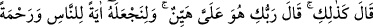
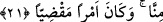

değmediği,” yani nikâh yoluyla hiçbir erkek benimle beraber olmadığı “iffetsiz de
olmadığım halde benim nasıl çocuğum olabilir?” dedi.”
Âyetteki “el-mess (dokunma)” helâl olan birleşmeden kinâyedir. Zinâ ifade edilirken
“o pislik yaptı”, “o günah işledi” veya “zinâ yaptı” diye ifâde edilir. Âyette “beşer
(insan)” denilmesinin sebebi ise Hz. Meryem’in doğurma için gerekli şartlardan ne
kadar uzak olduğunu göstermek içindir.
Şeyh, tefsîrinde der ki: “Âyette bağiyyeten buyrulmamıştır. Çünkü bağiyyen kelimesi,
“hâiz (hayızlı)” kelimesinde olduğu gibi çoğunlukla kadınlar için kullanılır. Yâni, ben
günahkâr, zinâkar ve erkekleri isteyen bir kadın değilim, demektir. Yani Meryem böyle
demekle, mutlak olarak hiçbir erkekle ilişkide bulunmadığını ifade etmektedir. Çocuk
ise ya helâl veya haram birleşmeden meydana gelir. Helal yoldan hiçbir insan Hz.
Meryem’e dokunmamıştır. Haram yola gelince, o zaten zinâkâr ve günahkâr bir kadın
değildir. Öyleyse çocuğu meydana getirecek her iki sebep de ortadan kalktığından
dolayı çocuk da meydana gelemez.
et-Te’vîlâtü’n-Necmiyye’de şöyle der: “Bana” daha evvel “bir insan eli değmedi,
iffetsiz de değilim” ki bundan sonra bana zinâ veya nikâh yoluyla birisi dokunsun.
Çünkü ben mescide adanmış bir kadınım ve koca bana haramdır.”
21. Cebrâil dedi ki: “Öyledir, Rabb’in bana: ‘O Bana kolaydır. Onu insanlara bir
mucize olsun diye ve Bizden bir rahmet kılmak için (bunu yapacağız)” dedi. Hem
bu önceden takdir edilmiş bir şeydir.”
“Cebrâil dedi ki: Öyledir.” Yani ey Meryem, durum senin dediğin gibidir. Hiçbir
kimse nikah ile veya zinâ yoluyla sana el sürmemiştir. Fakat beni sana gönderen
“Rabb’in” dedi ki: Sana hiçbir insan dokunmadan çocuk olması, her ne kadar normalde
imkânsız ise de sebep ve vâsıtalara ben ihtiyaç duymadığım için “o Bana kolaydır.”
et-Te’vîlâtü’n-Necmiyye’de şöyle der: “Cebrâil dedi ki: Öyledir.” durum senin
dediğin gibidir, ama “Rabb’in dedi ki: “O Bana kolaydır.” Bana bir babanın menîsi
olmadan çocuk yaratmak kolaydır. Çünkü ben onu ‘Ol’ kelimesinin nûrundan yaratırım.
Nitekim Allah Teâlâ şöyle buyurmuştur: “Allâh’a göre İsa’nın durumu, Âdem’in
durumu gibidir: Onu topraktan yarattı, sonra ona ‘Ol’ dedi ve oluverdi.” (Âl-i
İmran, 3/59)”
“Onu insanlara bir mucize olsun diye” o çocuğun verilişini kudretimizin kemâline
delil saymaları veya kudretimizin büyüklüğünü açıklamak için yapacağız.
et-Te’vîlâtü’n-Necmiyye’de şöyle der: “O çocuğun verilişi kudretimin bir delîlidir.
Nasıl ki Âdem’i anne-babasız, Havvâ’yı da annesiz yarattımsa yine babasız bir çocuk